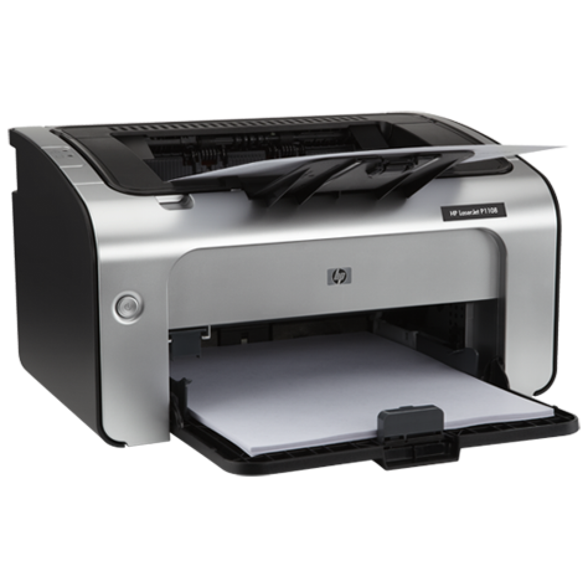

INTRODUCCIÓN
La impresora es el periférico que nos permite pasar a papel los documentos almacenados en el PC. Durante años se pensó que acabarían desapareciendo y que las oficinas serían sin papeles, ahora las usamos más que nunca. La impresora no ha dejado de ser ese elemento imprescindible en cada casa y empresa.
Han ido evolucionando y ahora en el mercado puedes encontrar impresoras multifuncionales, las cuales añaden un escáner, para poder escanear papeles y pasarlos al PC rápidamente, o con disco duro interno, Wifi o tarjetas de red ampliando su funcionalidad y versatilidad. Incluso existen impresoras que pueden funcionar sin un PC ya que permiten insertar directamente dispositivos USB o incluso por bluetooth o el Wifi, e imprimir sin necesidad de nada más.
Hay varios tipos de impresoras, como la de láser, las cuales su mayor ventaja son su velocidad y que la tinta que se usa es más barata. También están las de impacto, son más antiguas y son muy comunes en las empresas debido a que son las únicas capaces de usar papel autocopiante.
Son más lentas que las láser, puedes necesitar más de un minuto por hoja. Pensadas para un uso no empresarial donde la cantidad de papel no sea excesiva. Su funcionamiento interno se basa en un cabezal que se mueve soltando pequeñas gotas de tinta. Existe un motor que mueve el cabezal y otro que desliza el papel y la imagen se va formando línea a línea.
Tienen baja velocidad de impresión y su coste de tinta por cada hoja impresa es alto. Puede ser hasta conveniente rellenar los cartuchos debido a su coste. Son las más baratas de comprar pero las más caras sin duda de mantener.
TIPO DE IMPRESORAS
INYECCIÓN DE TINTA
LASER